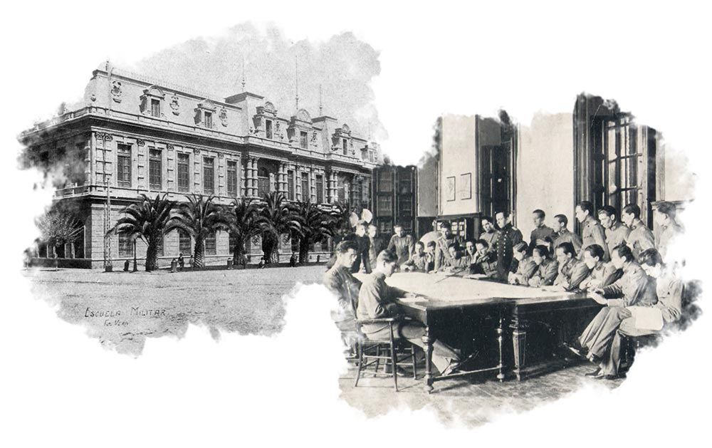
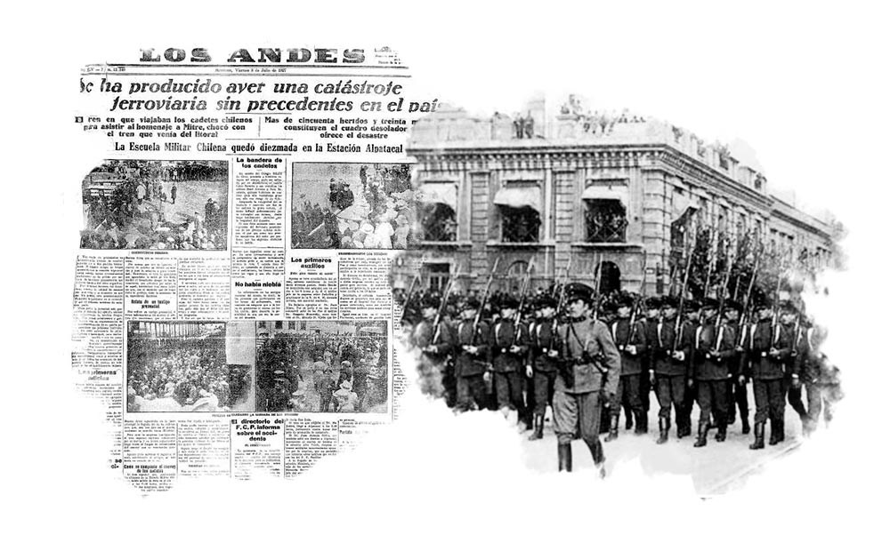

Admisi6n
Admisi6n-
Nuestra Escuela
-
vinculaci6n con eI Medio
-
InFormaci6n Académica
- Noticias
Contraste

Tamaño de fuente


Comparte en:
El libertador General Bernardo O’Higgins Riquelme fundó junto a su Ministro de Guerra General José Ignacio Zenteno del Pozo, la Academia Militar con el propósito de formar e instruir oficiales para llenar las vacantes de los regimientos, cubrir los cuerpos de Milicias Cívicas y levantar un nuevo Ejército en caso necesario. Los primeros uniformes de la Academia Militar fueron de influencia francesa. El cadete lucía hasta la cintura una corta guerrera en su parte delantera que se alargaba ligeramente hacia atrás como una levita. Morrión alto en su cabeza ( similar al de los granaderos españoles), La primera promoción que ingresó a la Academia, estuvo formada por 102 cadetes. Varios de ellos argentinos.
La batalla de Maipú también conocida como La Batalla de Maipo, fue un enfrentamiento decisivo dentro del contexto de la Guerra de la Independencia, tuvo lugar el 5 de abril de 1818, en el sector conocido como los Cerrillos del Maipo y constituyó el bautismo de fuego para la recién formada Academia Militar. Acudieron al campo de batalla 100 cadetes a los que hoy conocemos como “Las Cien Aguilas” bajo las ordenes del General O`Higgins.
Durante el decenio del General Manuel Bulnes Prieto (1841-1851), se cambia de nombre de Academia Militar por Escuela Militar. Período de noventa años aproximadamente de notoria influencia francesa, sin embargo, no será hasta el año 1849, cuando ello definitivamente se concrete.
El cadete viste largo levitón azul marino y alto quepís, que no alcanza a ser morrión como durante el período de la Independencia de Chile. Prosigue la influencia francesa en las vestimentas del cadete en los programas de enseñanza, sobresaliendo las asignaturas de Aritmética, la Métrica y la Oratoria.
El levitón se acorta levemente, prosiguiendo el alto quepís con “pon-pon” de color. Es un año de profunda reformulación de los planes de estudio y reglamentos insertos en un establecimiento que cada vez se hacía más estrecho de las necesidades de los alumnos que vivían internos en el cuartel.
A lo largo de su historia la Escuela Militar ha tenido un total de nueve cuarteles, siendo la mayoría de
ellos de carácter temporal. La Inauguración del nuevo cuartel ex profeso para la Escuela Militar, marca
un hito para el instituto ya que sería este su primer cuartel permanente. Ubicado en las proximidades
del ex Parque Cousiño y actual elipse del Parque O´Higgins, el antiguo cuartel Blanco Encalada se
mantuvo estrechamente ligado al Ejército y hoy alberga al Museo Histórico y Militar.
Sin embargo, “la vieja escuela” carecía de piscina y campo de tiro para la enseñanza de las
especialidades, la estrechez de espacio se hizo evidente lo que obligó a los mandos del alcázar a buscar
un nuevo sitio para ubicar a la Escuela.
Los primeros oficiales alemanes llegaron en septiembre de 1885 liderados por el Capitán Emil Karl Theodor Körner Henze. Heredero de una larga tradición militar prusiana, fue comandante del Ejército de Chile con el grado de inspector general desde 1900 a 1910. Posteriormente arribaron al país, en forma paulatina, 44 instructores prusianos que formaron parte de la más capacitada oficialidad de la época.
Cadete de la Academia Militar con uniforme de salida. Su guerrera azul Prusia es más sencilla respecto de la francesa. En sus pecheras ya no existen los dorados hilos y hojas de laureles parisimo, bordados exclusivamente en Francia. En este periodo en antiguo cuartel de Av. Blanco Encalada, el año escolar se iniciaba con la asistencia de 216 cadetes.
En la madrugada del 07 de julio de 1927, el tren que trasladaba a la Escuela Militar rumbo a Buenos Aires invitada por el gobierno argentino para participar en las “Fiestas Julias”, fue impactado de frente por otro convoy cerca de Mendoza. Quince militares entre cadetes, suboficiales, soldados y dragoneantes perdieron la vida .
Siendo director el Coronel Arnaldo Carrasco Carrasco se oficializó por orden comando N·245 del 12 de noviembre de 1939 el escudo oficial de la Escuela Militar. El escudo que perdura hasta hoy es obra de Héctor Aravena González, profesor de arte del instituto que ganó el concurso concurso público para dotar de un simbolo representativo a la Escuela Militar.
Los mandos de la Escuela estimaron pertinente crear un medio de difusión para las actividades del instituto. Es así como a el 25 de abril de ese año aparece el primer número de esta revista cuya publicación se mantiene hasta el día de hoy.
“En las afueras de Santiago” como se decía con respecto a la adquisición de la compra de terrenos en la Hacienda de las Condes, más propiamente el fundo “San Luis” que la componía, se asentó el segundo cuartel ad hoc para el funcionamiento de la Escuela Militar.

El subalférez Enrique Astaburuaga Pumarino, compuso la letra recogiendo en ella parte importante de la heroica historia de las “Cien Aguilas” , el arreglo musical lo hizo el Suboficial Mayor Santiago Mekled Mortus quien adaptó para el himno la marcha alemana “Fuego de Artificio”.
Se integra por primera vez la Escuela de Aviación a la competencia deportiva celebrada año a año desde 1939 entre la Escuela Militar y la Escuela Naval. Entre los días 22 al 30 de septiembre de 1945 se desarrolló esta competencia Inter-Escuelas matrices apuntada a fortalecer los lazos de camaradería y amistad entre los cadetes militares, navales y aéreos.
Entre 1955 y 1958, al mando de su Director Coronel Ricardo Lecaros, abandonó definitivamente el cuartel de Blanco Encalada para instalarse en su nuevo edificio de Las Condes. El cambio implicó espacios más grandes, áreas verdes y campos deportivos dentro de la propia Escuela. Sus salas de clases y laboratorios hicieron del establecimiento uno de los mejores del país.
Durante los años sesenta y de acuerdo a las nuevas tendencias en materia de educación, la Dirección de Instrucción del Ejército y el Ministerio de Educación aprueban un nuevo plan de estudios que contemplaba un primer ciclo secundario-preuniversitario de tres años y un segundo ciclo a nivel universitario de dos años.
Siendo Director el Coronel Alberto Labbé Troncoso se inauguró la piscina olímpica exterior y el Museo del instituto. Es precisamente en el Museo donde se conservan algunas notables piezas históricas como la Bandera Chilena que flameo en la batalla de la Concepción.
El Padre de la Patria y fundador de este plantel custodia nuestro plantel desde su sitial de honor en el frontis del instituto, junto a el arde la "Llama de la Libertad" .
La tensión vivida en 1978 ante la crisis del Beagle llevó a Chile a vivir una de las situaciones más cercanas a la guerra que se vivieron en siglo XX. Los efectos del conflicto se sintieron también en la Escuela Militar que aumentó sus vacantes de ingreso de 200 a 400 alumnos y se modificó el plan curricular potenciando aún más la instrucción de combate.
La Escuela Militar recibe en donación el predio de Pichicuy por parte de la Corporación de la Reforma Agraria. Es precisamente en este terreno donde hasta nuestros días la Escuela realiza sus principales actividades de instrucción en terreno.
La Escuela Militar crea el “Batallón Pampa Germania” que formaba parte del Curso Especial Adelantado de Estudiantes (CEAE) destinado a que estudiantes secundarios cumpliesen con su Servicio Militar como también a incentivar a los jóvenes a seguir la carrera militar. Durante un periodo de instrucción de 8 meses los Soldados Estudiantes recibían formación militar, valórica y física.
Los primeros días de febrero el Alcázar recibe a las primeras mujeres en la historia del plantel, asumiendo a partir de este momento la responsabilidad de formar a las futuras Oficiales de Ejército. Este año y luego de pasar con éxito los respectivos exámenes médicos, físicos y académicos propios del sistema de admisión, las primeras 20 reclutas femeninas comienzan su proceso formativo.
A partir de este año se modifica el “Estatuto Administrativo de Personal de las Fuerzas Armadas” extendiendo la carrera para las mujeres hasta los 30 años de servicio y creando una vacante especial para ellas en el grado de Coronel.
Cambios en la malla curricular y el proceso de modernización del Ejército, convierten a la Escuela Militar en una institución de educación superior que entrega una licenciatura en Ciencias Militares. A partir de esta fecha se debe ingresar con 4to medio y con la PAA o PSU rendidas.
Pionera entre los institutos formadores de oficiales en las Fuerzas Armadas. Acredita pregrado en Licenciaturas en Ciencias Militares y área de gestión institucional, ante la Comisión Nacional de Acreditación.
En diciembre del 2005, en una solemne ceremonia, se acaba el CEAE licenciando a Soldados Estudiantes por última vez en la Escuela Militar tras 15 años formando jóvenes en los valores del mérito, virtud y patriotismo. Muchos de ellos ingresaron a la Escuela como cadetes o siguieron sirviendo en el Ejército a través de la Reserva Militar.
El año 2007 y por primera vez en la historia del Instituto, las cadetes femeninas dejaron de conformar una unidad de formación aparte y pasaron a integrar las escuadras de fusileros vistiendo pantalón, casco y mochila al igual que sus camaradas varones.
El Bicentenario de Chile tuvo como fecha el 18 de septiembre de 2010. Su celebración conmemoró los 200 años del inicio del proceso de independencia de Chile, con la Primera Junta Nacional de Gobierno el 18 de septiembre de 1810, que luego de casi ocho años, acabaría transformando a Chile en un país libre e independiente. La celebración correspondió a diversas actividades y planes nacionales que se fueron preparando con varios años de anticipación.
Desde mayo de 2015 hasta mayo de 2020 se acreditó el pregrado de la carrera de Oficial de Ejército.
En una trascendental ceremonia encabezada por S.E la Presidenta de la República, señora Michelle
Bachelet Jeria, acompañada del Comandante en Jefe del Ejército, General Humberto Oviedo Arriagada, se
conmemoraron los 200 años de vida de la Escuela Militar del Libertador Bernardo O´Higgins Riquelme.
El emotivo acto incluyó la tradicional ceremonia de entrega de espadines a los cadetes de primer año y
la imposición por parte de S.E de la condecoración “Presidencia de la República” a los estandartes de
combate.
En esta especial celebración participaron también nueve delegaciones internacionales, representadas por
las escuelas matrices de sus Ejércitos además de personal de las escuelas de Naval, Aviación y
Carabineros. Cabe destacar que todas estas se unieron al desfile conmemorativo que selló la ceremonia
con la compañía de cadetes recién ingresados a la Escuela Militar.

Medalla SÍGUENOS EN REDES SOCIALES:
Políticas de Privacidad.